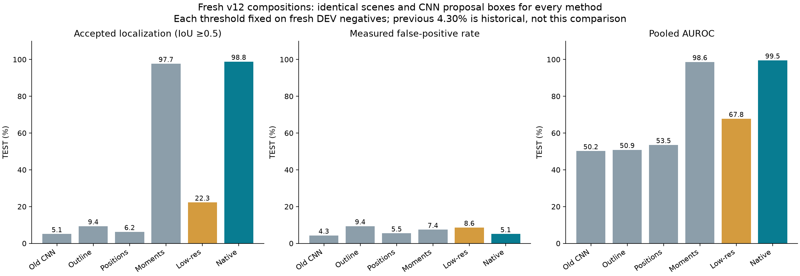
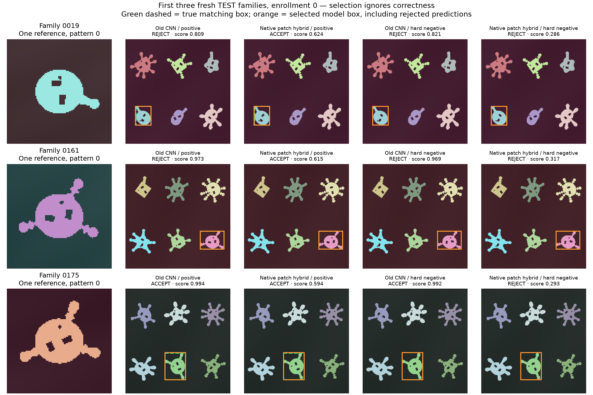
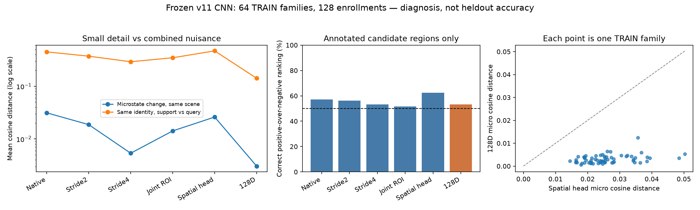
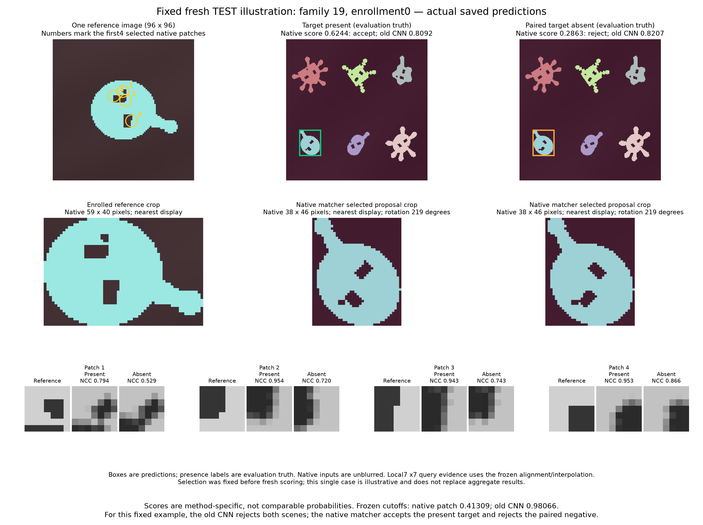
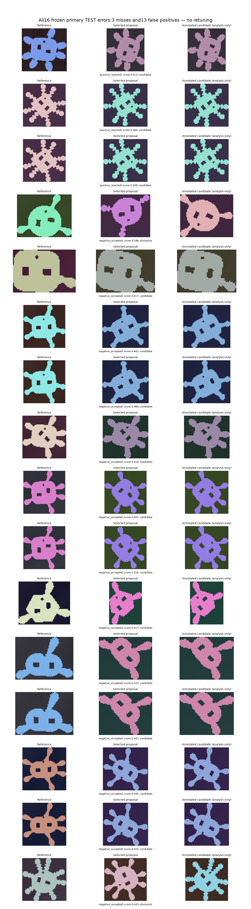

HyperNet v12 • fresh held-out 2D micro-pattern detection • one support per enrollment
Keep the small evidence separate from the broad outline.
On the same fresh TEST scenes, native fine-patch matching reaches 98.83% accepted localization versus 5.08% for the previous CNN. The paired difference is +93.75 pp, 95% family interval [+89.45 pp, +97.66 pp]. The paired interval supports an improvement in this controlled synthetic test.
Measured TEST false-positive rates: 5.08% for native patches and 4.30% for the old CNN. The historical 4.30% result came from a different cohort; the comparison above reruns both methods on identical fresh images.
This improvement concerns a controlled 2D micro-pattern task. The primary is a hybrid: our existing synthetic-trained CNN proposes object boxes, and an analytic local-image matcher scores them. No new fine-matching CNN weights were learned. The original goal—recognizing any natural example of a category from one reference—remains unvalidated.
Browse all fresh scenes and predictions · Mathematics, primary sources and implementation · Public code and prior experiments
Six methods, identical fresh scenes

| Split | Method | Localized positives | Localized recall | False positives | Proposal recall | Paired ranking | AUROC | Single-box AP50 |
|---|
| DEV | Previous CNN | 11/256 | 4.30% | 4.69% | 100.00% | 53.91% | 50.10% | 37.29% |
| DEV | Filled outline only | 12/256 | 4.69% | 4.69% | 100.00% | 50.39% | 50.01% | 48.25% |
| DEV | Local positions + sizes | 17/256 | 6.64% | 4.69% | 100.00% | 55.08% | 52.32% | 51.98% |
| DEV | Local shape moments | 252/256 | 98.44% | 4.69% | 100.00% | 99.80% | 99.71% | 99.26% |
| DEV | Compressed fine patches | 69/256 | 26.95% | 4.69% | 100.00% | 90.04% | 68.25% | 70.15% |
| DEV | Native fine patches (primary) | 253/256 | 98.83% | 4.69% | 100.00% | 99.80% | 99.81% | 99.38% |
| TEST | Previous CNN | 13/256 | 5.08% | 4.30% | 100.00% | 52.34% | 50.19% | 35.06% |
| TEST | Filled outline only | 24/256 | 9.38% | 9.38% | 100.00% | 51.17% | 50.87% | 50.45% |
| TEST | Local positions + sizes | 16/256 | 6.25% | 5.47% | 100.00% | 50.00% | 53.52% | 51.97% |
| TEST | Local shape moments | 250/256 | 97.66% | 7.42% | 100.00% | 99.41% | 98.63% | 98.14% |
| TEST | Compressed fine patches | 57/256 | 22.27% | 8.59% | 100.00% | 92.97% | 67.77% | 67.70% |
| TEST | Native fine patches (primary) | 253/256 | 98.83% | 5.08% | 100.00% | 100.00% | 99.51% | 99.49% |
Each split contains 256 positive and 256 negative query rows from 128 composition families. Every method uses the exact same CNN-predicted proposal roster. A positive is localized correctly only if its top score is accepted and its selected box has IoU ≥0.5. Each threshold is fixed independently on fresh DEV negatives at no more than 5% false positives, then applied unchanged to TEST. TEST false positives are measured rather than forced to 5%. The AP50 column is a one-box-per-scene ranking metric, not full COCO multi-box/multi-IoU AP.
What the controls isolate
Filled-outline matching discards internal evidence. The position-and-size control retains matched interior-feature locations and sizes but omits covariance. The moment control additionally compares local shape covariances; it uses a more specific connected-interior-feature prior. The primary patch matcher selects interior gradient peaks from the reference alone and compares the actual local image patterns. Its compressed control uses the same native alignment, patch centers, patch count and equal weights, but downsamples/re-enlarges only fine RGB evidence by a factor of four.
| Paired localized-recall comparison | Difference | 95% interval |
|---|
| Primary minus previous CNN | +93.75 pp | [+89.45 pp, +97.66 pp] |
| Primary minus compressed fine evidence | +76.56 pp | [+69.53 pp, +83.59 pp] |
Intervals use 10,000 paired bootstrap draws of 128 TEST families, seed 1812. All four query rows and both opposite enrollments stay together. They are conditional on the selected algorithms, this generator, the existing CNN and the fixed DEV thresholds. No cutoff refitting occurs inside the bootstrap. These are individual intervals, not simultaneous familywise guarantees.
The actual matching rule
The matcher estimates foreground from RGB contrast against a perimeter background fit. Filled silhouettes determine broad rotation/scale alignment. Only then does it compare at most twelve reference-selected 7×7 interior gradient patches, each normalized independently. Five fixed local one-pixel shifts tolerate small registration errors. This keeps a few informative pixels from being overwhelmed by the area of the unchanged silhouette.
cⱼ = best normalized local correlation over five fixed shifts
D = meanⱼ((1 − cⱼ) / 2)
score = filled-outline overlap⁴ × exp(−8D)
Near-constant patches have a fixed RMS floor. The primary does not consult the connected-hole/covariance descriptors used by the separate moment controls. The shared evaluation computes those descriptors for the controls. Native evidence still undergoes bilinear affine sampling; this is not exact preservation of every pixel. The alignment and patch rules are established analytic ingredients, not a newly discovered theorem or proof of human-like reasoning.
Freshness and data budget
The new cohort contains 128 DEV and 128 TEST compositions chosen from previously unused grammar IDs. These are new combinations of familiar operators, not new natural semantic classes. Its 512 support images and 512 distinct query scene images yield 1,024 query rows through opposite enrollment reuse. The same candidate scene is positive for one support pattern and negative for the other. Fresh pixels are checked against the previous dataset for overlap.
The proposal CNN retains its prior synthetic-only training: 2,048 training compositions, 4,096 unique support images plus 4,096 unique query images, 1,024 optimizer updates, and 897,207 parameters. v12 adds zero optimizer updates. Algorithm development used a declared subset of 64 old TRAIN families and one old DEV pass; those development scores are not fresh validation. The algorithm, controls and replay roster were frozen before fresh scenes were generated. Fresh DEV is used for threshold calibration only. Enrollment receives one RGB reference and its support box; no query truth, mask, pose or grammar identity enters scoring. Natural training images and borrowed pretrained weights are zero.
Actual examples, selected without looking at correctness

These are the first three TEST family IDs, enrollment 0. Green dashed boxes show the true matching target; orange boxes show each method's selected proposal, including rejected decisions. Negative scenes contain no matching micro-pattern.

TRAIN-only stage diagnosis. Candidate boxes and known changed pixels are diagnostic controls, not inference inputs or fresh accuracy.
Fixed fresh example selected before results: reference-selected local evidence and actual selected query regions. Scores have different scales and are not probabilities. Both old CNN scores fall below its own frozen cutoff.
Every primary TEST error: three rejected positives and thirteen accepted negatives. This is post hoc descriptive analysis; no parameter or threshold was changed.
Remaining limits
The images have clean, separated, high-contrast objects, making foreground extraction and outline alignment favorable. The new path can fail with touching objects, low contrast, occlusion, changing texture, symmetric outlines or missing local structure. Per-patch translation search can sometimes align unrelated local evidence. The task rejects same-outline objects with a different internal pattern; that is narrower than recognizing all natural examples of a type. A result here must be retested on genuinely new natural photos before claiming progress on semantic category recognition.
Evidence
The independent audit reproduced all 168 metric fields, 6,144 localization rows, 24 interval values, 96 full predictions and 16 direct original-CNN predictions. A documentation filename collision temporarily replaced an offline review after freezing; its exact original bytes were restored to the frozen hash, the replacement was preserved separately, and the recovery is disclosed below. No model, scoring rule or result changed.
Results SHA256: dc6611aa3ef0a70981308f006f54c8640ecdb29e046ba3afc10cb6c169cd36b8. Source and score hashes verified during report generation. Report generation does not alter model weights, scoring rules or thresholds.